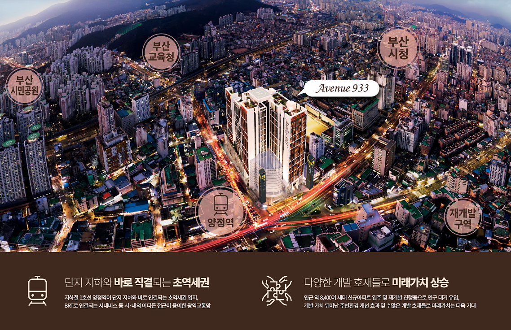
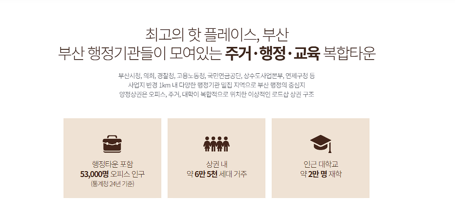
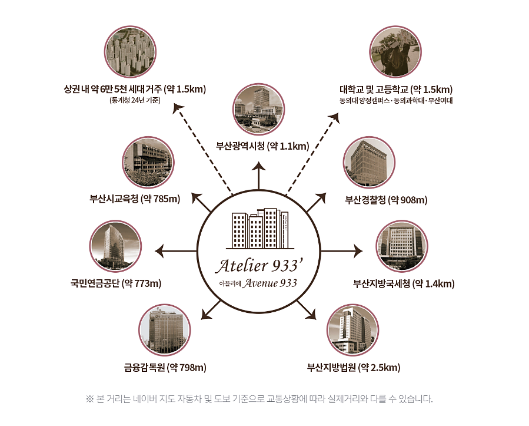

지하철 1호선 양정역과 이어지는 상업시설 동선
MEDICAL OPENING · BUSANJINGU
부산진구 병원개원,
입지부터 다시 봐야 하는 이유
병원·의원 개원은 좋은 건물을 고르는 것만으로 끝나지 않습니다.
환자가 찾아오기 쉬운 접근성, 생활권 수요, 주차와 동선, 실제 개설 가능 여부까지 함께 확인해야 합니다.
주거·행정·오피스·교육 수요가 겹치는 양정 생활권
현재 안내 기준 주차 공간 260대, 2시간 무료
진료과목과 공간 조건에 맞춰 입점 가능성 개별 확인
BUSANJINGU CLINIC OPENING GUIDE
병원개원은 “좋은 자리”보다
“맞는 자리”를 찾는 과정입니다.
부산진구 병원개원을 준비한다면 유동인구가 많다는 이유만으로 입지를 결정하기보다, 진료과목과 환자층에 맞는 생활권인지부터 확인하는 것이 중요합니다. 내과·소아청소년과·피부과처럼 생활권 기반 수요가 중요한 진료과목과, 정형외과·치과처럼 접근성과 주차 편의가 중요한 진료과목은 공간을 보는 기준이 달라질 수 있습니다.
부산진구 병원개원, 먼저 진료권부터 확인해야 합니다
개원 준비에서 첫 번째로 볼 것은 건물 자체가 아니라 진료권입니다. 주변에 어떤 연령대가 거주하는지, 직장인과 학생 유입이 어느 시간대에 집중되는지, 동일하거나 유사한 진료과 의료기관이 얼마나 분포하는지를 함께 봐야 합니다.
부산진구 양정 생활권은 주거뿐 아니라 행정기관, 오피스, 교육시설이 함께 모여 있는 복합 생활권이라는 특징이 있습니다. 한 가지 유형의 수요에만 의존하기보다 평일 주간·출퇴근·생활형 방문 수요가 겹치는 구조를 검토할 수 있다는 점이 병원개원 입지 분석에서 중요한 포인트가 됩니다.

환자가 찾아오기 쉬운가 — 접근성과 배후수요
의료기관은 재방문 가능성이 높은 업종입니다. 초진 환자 유입도 중요하지만, 일정 간격으로 다시 방문해야 하는 환자가 불편하지 않게 찾을 수 있는지도 살펴야 합니다.

SUBWAY양정역 직통 연결
지하철에서 상업시설로 이어지는 이동 동선을 통해 대중교통 접근성을 고려할 수 있습니다.
RESIDENTIAL약 6만여 세대 생활권
제공된 안내 자료 기준 양정 상권 내 6만여 세대의 주거 배후가 언급되고 있습니다.
OFFICE행정·오피스 수요
시청·교육청 등 행정타운을 포함한 약 5만3천 명 규모 오피스 인구가 안내되어 있습니다.

병원은 평수보다 공간 조건을 먼저 봐야 합니다
같은 면적이라도 병원에 적합한 공간과 그렇지 않은 공간은 분명히 나뉩니다. 대기실과 진료실 배치, 장비 반입 동선, 전기 용량, 급배수, 환기, 소방 조건, 엘리베이터와 주차 접근성 등을 실제 개원 계획과 함께 검토해야 합니다.
AVENUE 933은 각 층을 잇는 에스컬레이터와 넓은 복도, 중앙 오픈 보이드 등 상업시설 내 이동 흐름을 고려한 구조가 특징입니다. 또한 현재 안내 자료에는 주차공간 260대와 2시간 무료 주차 조건이 기재되어 있어, 자동차 방문 비중이 높은 진료과목이라면 함께 확인할 만한 요소입니다.
개원 전 공간 체크리스트
- 건축물대장상 의료기관 개설이 가능한 용도인지
- 예정 진료과 장비의 전기·급배수·하중 조건을 충족하는지
- 소방·피난 동선과 공사 가능 범위를 확보할 수 있는지
- 엘리베이터와 주차장에서 진료 공간까지 이동이 편한지
- 간판·외부 노출·환자 안내 동선을 확보할 수 있는지
계약 전에 반드시 확인할 인허가와 일정
의료기관 개원은 임대차 계약과 인테리어만으로 끝나지 않습니다. 의원급과 병원급은 개설 절차가 다르고, 건축물 용도와 소방·전기·시설 요건에 따라 일정이 달라질 수 있습니다.
특히 공간을 먼저 계약한 뒤 의료기관 개설이 어려운 조건을 발견하면 전체 개원 일정과 비용이 크게 흔들릴 수 있습니다. 따라서 계약 전 건축물 용도와 개설 가능 여부를 확인하고, 설계·인테리어·장비 반입·신고 또는 허가 일정을 역산해 준비하는 것이 안전합니다.
STEP 01진료과·규모 결정
STEP 02입지·건축물 용도 확인
STEP 03임대차·설계·인테리어
STEP 04개설 신고·허가 및 개원 준비
AVENUE 933에서 메디컬 상가를 검토한다면
현재 제공된 안내 자료에서는 AVENUE 933 내 메디컬 상가 유치를 위해 내과, 소아청소년과, 피부과, 정형외과, 치과, 한의원, 이비인후과 등이 추천 진료과목으로 제시되어 있습니다. 또한 임대 조건과 렌트프리 기간은 개별 협의 가능 조건으로 안내되어 있습니다.
다만 진료과목마다 필요한 면적과 시설 조건이 다르므로, 추천 업종만 보고 결정하기보다 실제 호실별 전용면적, 설비, 주차, 간판 노출, 의료기관 개설 가능 여부를 상담을 통해 개별 확인하는 것이 좋습니다.
내과소아청소년과피부과정형외과치과한의원이비인후과
부산진구 병원개원 자주 묻는 질문
부산진구에서 병원·의원 개원을 준비할 때 입지 선정과 계약 전에 많이 확인하는 내용을 정리했습니다.
부산진구 병원개원 입지는 무엇부터 확인해야 하나요?
진료과목에 맞는 진료권과 환자층을 먼저 확인하는 것이 좋습니다. 주거 인구뿐 아니라 직장인·학생·행정기관 방문 수요, 경쟁 의료기관 분포, 대중교통과 주차 편의까지 함께 비교해야 실제 내원 가능성을 판단하기 쉽습니다.
양정역 인근에서 병원개원을 검토할 때 장점은 무엇인가요?
양정 생활권은 지하철 접근성과 함께 주거·행정·오피스·교육 수요가 겹치는 복합 생활권이라는 점을 검토할 수 있습니다. 다만 실제 적합성은 진료과목, 환자 연령대, 경쟁 의료기관과 호실 조건에 따라 달라질 수 있습니다.
병원 임대차 계약 전에 건축물 용도를 확인해야 하나요?
네. 의료기관 개설 가능 여부는 건축물 용도와 시설 조건에 영향을 받을 수 있으므로 계약 전에 관련 내용을 확인해야 합니다. 진료과별 장비, 전기·급배수, 소방·피난 조건과 공사 가능 범위도 함께 검토하는 것이 안전합니다.
부산진구 의원개원에서 주차와 환자 동선이 중요한 이유는 무엇인가요?
의료기관은 재방문 환자 비중이 높을 수 있어 지하철역이나 주차장에서 진료 공간까지 이동이 편한지가 중요합니다. 고령 환자, 소아 동반 보호자, 치료 후 이동이 불편한 환자가 많은 진료과라면 접근성과 주차 조건의 영향이 더 커질 수 있습니다.
AVENUE 933 메디컬 상가는 어떤 진료과가 검토할 수 있나요?
현재 제공된 안내 자료에는 내과, 소아청소년과, 피부과, 정형외과, 치과, 한의원, 이비인후과 등이 추천 진료과목으로 제시되어 있습니다. 실제 입점 여부와 필요한 면적·설비·임대 조건은 호실별로 상담을 통해 확인하는 것이 좋습니다.
MEDICAL SPACE
개원 공간과 임대 조건을
개원 공간과 임대 조건을
직접 확인해보세요.
- 임대·분양 조건 개별 상담
- 렌트프리 기간 협의 가능
- 개원 마케팅 지원 안내
- 호실별 공간 조건 확인
※ 임대·분양·주차·렌트프리·마케팅 지원 등 세부 조건은 시점과 계약 조건에 따라 달라질 수 있으므로 실제 상담 및 계약 시 최종 내용을 반드시 확인하시기 바랍니다.
AVENUE 933 MEDICAL OPENING
부산진구 병원개원,
전화 상담하기
부산진구 병원개원,
입지부터 상담해보세요.
진료과목과 필요한 면적을 알려주시면 현재 확인 가능한 공간과 조건을 안내해드립니다.